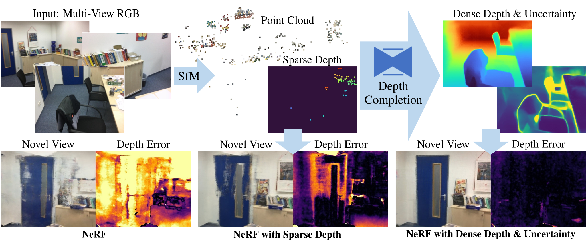

arXiv 2021
Barbara Roessle1 Jonathan T. Barron2 Ben Mildenhall2 Pratul P. Srinivasan2 Matthias Nießner1
1Technical University of Munich 2Google Research

Neural radiance fields (NeRF) encode a scene into a neural representation that enables photo-realistic rendering of novel views. However, a successful reconstruction from RGB images requires a large number of input views taken under static conditions — typically up to a few hundred images for room-size scenes. Our method aims to synthesize novel views of whole rooms from an order of magnitude fewer images. To this end, we leverage dense depth priors in order to constrain the NeRF optimization. First, we take advantage of the sparse depth data that is freely available from the structure from motion (SfM) preprocessing step used to estimate camera poses. Second, we use depth completion to convert these sparse points into dense depth maps and uncertainty estimates, which are used to guide NeRF optimization. Our method enables data-efficient novel view synthesis on challenging indoor scenes, using as few as 18 images for an entire scene.
@article{roessle2021depthpriorsnerf,
title={Dense Depth Priors for Neural Radiance Fields from Sparse Input Views},
author={Barbara Roessle and Jonathan T. Barron and Ben Mildenhall and Pratul P. Srinivasan and Matthias Nie{\ss}ner},
archivePrefix={arXiv},
year={2021}
}